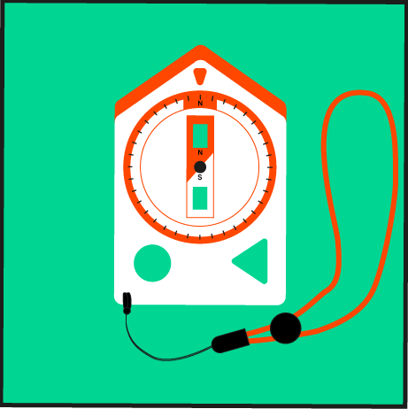
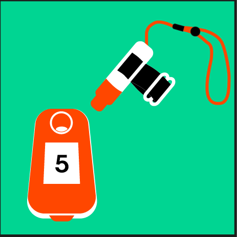
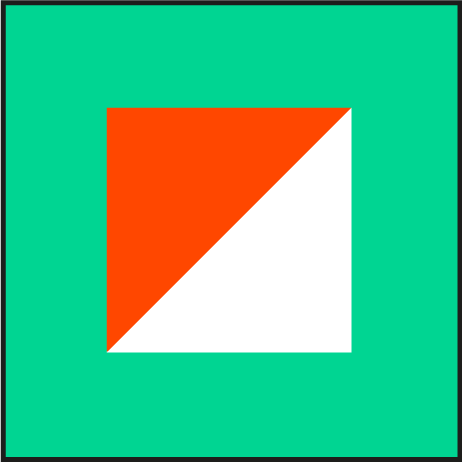
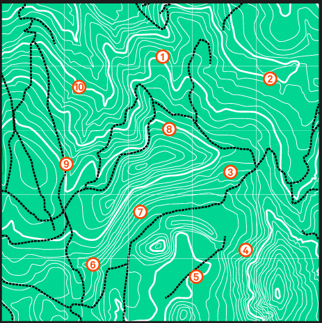
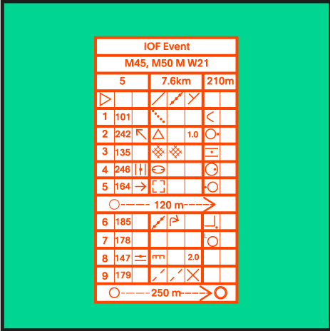
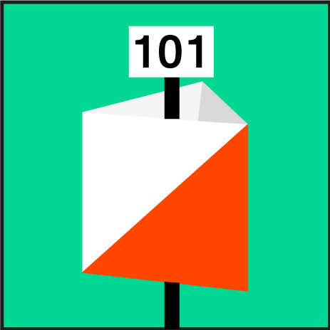
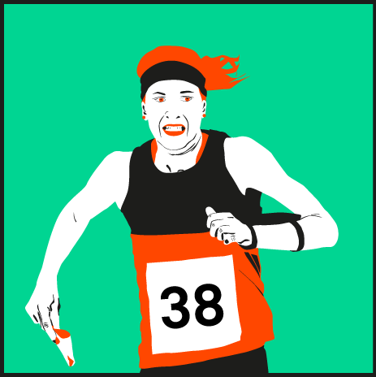
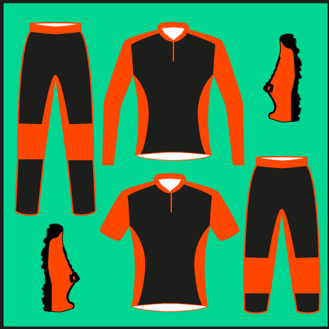
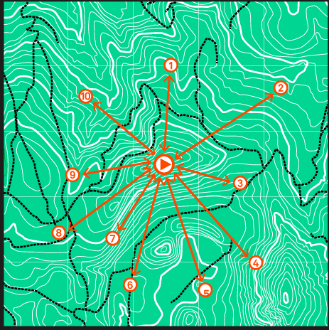
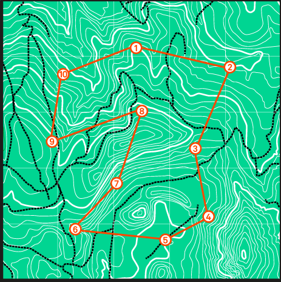

La course d’orientation est un sport de pleine nature qui se pratique avec une carte et une boussole,  voire un système de gestion chronométrique électronique  (puce électronique au doigt) et qui se déroule en général dans la forêt (individuelle ou relais) ou plus rarement en ville (sprint et relais) de jour ou de nuit. La forme traditionnelle est une course à pied de type tout terrain mais d’autres formes de course d’orientation sont nées au fil des années, notamment à VTT et à ski. Une personne pratiquant cette activité est appelée un orienteur ou une orienteuse. Ce sport (en compétition) est géré par l'International Orienteering Federation .
Au départ d'une course traditionnelle, l'orienteur reçoit une carte  et la définition des postes ; le terrain qu’elle représente ne lui est pas connu. Il doit alors effectuer un circuit, dans un ordre imposé (ou libre suivant le mode) et composé de plusieurs postes de contrôle appelés balises . Pour les trouver le plus rapidement possible, l'orienteur doit suivre une démarche réfléchie, en plusieurs phases. En compétition, les postes de contrôle doivent être atteints le plus rapidement possible. Pour y parvenir, l'orienteur doit décider d'un itinéraire en s'aidant de sa carte pour rejoindre au plus vite le prochain poste . La difficulté réside dans le choix de cet itinéraire, un itinéraire trop physique ou trop long peut faire perdre du temps. Il doit aussi gérer sa vitesse (une vitesse de course trop élevée empêche la lecture de carte et diminue la capacité de réflexion, une vitesse de course trop lente fait perdre du temps). On dit que la course d'orientation est le sport de la tête et des jambes.
La course d’orientation — en anglais: orienteering, en français abrégé: C.O. — trouve son origine en Scandinavie au XIXe siècle en tant qu’exercice militaire. Sous forme de compétition civile, elle apparaît en Norvège en 1897. L’activité gagne en popularité avec l’apparition de boussoles plus fiables à partir de 1930. Elle devient un phénomène international dans les années 1966 parallèlement au développement des activités de plein-air et des prises de conscience environnementales, la Fédération internationale de course d'orientation (IOF) a été fondée le 21 mai 1961 lors d'un congrès tenu à Copenhague. Les 10 membres fondateurs étaient la Bulgarie, la République fédérale allemande, la République tchèque, la République fédérale d'Allemagne, le Danemark, la Hongrie, la Norvège, la Suède et la Suisse.
En 2019, 71 différentes fédérations nationales, de tous les continents, adhèrent à la fédération internationale, l’International Orienteering Federation (IOF). La course d'orientation est reconnue sport olympique depuis 1977. Des championnats du monde sont organisés chaque année et la course d’orientation fait partie des Jeux mondiaux. Le programme des championnats du monde comprend cinq compétitions, pour hommes et femmes: sprint, relais sprint (mixte), moyenne distance, longue distance et relais. En compétition, au début des années 2000, le sport est dominé par les pays nordiques et la Suisse (Simone Niggli-Luder) .
En 2018, la Fédération Française de Course d'Orientation (FFCO) recense 184 clubs repartis en 6 ligues affiliées à ce jour, la Fédération suisse de course d'orientation (SOLV) en groupe environ 110, la Vlaams Verbond voor Oriënteringssporten (VVO) et la Fédération régionale des sports d'orientation (FRSO) comptent 17 clubs pour la Belgique et la Fédération Canadienne de Course d'Orientation (COF) en réunit environ 30. Les clubs organisent parfois des entraînements et organisent des courses départementales, régionales, nationales voire internationales suivant un calendrier annuel.
Le matériel typique des courses d'orientation se compose d'une boussole , d'une carte , d'une définition des postes , d'une puce électronique de chronométrage ainsi que de vêtements et de chaussures adaptés . Certaines variantes de course se déroulent de nuit et il convient d'ajouter une bonne lampe frontale (led de préférence) ou lampe vtt en complément.
La définition des postes est également normalisée (ex ISOM 20172 peut être imprimée sur la carte. Elle est généralement distribuée sur un papier séparé en compétition, que l'on glisse dans un porte-définition (une sorte de pochette attachée au poignet). Elle sert à préciser l'emplacement du poste de contrôle. Ainsi qu'à contrôler le numéro de poste.
IOF Event
description des postes IOF
M45, M50, W21
catégories
5
numéro parcours
7.5km
longueur
210m
dénivelée
départ
route
mur
jonction
postes
numéro des postes
sentier
coude
rocher
côté est
fourrée
entre
central
dépression
partie est
nord-ouest
ruine
nord ouest
suivre le balisage pendant 120m
ruines ou tombés
angle sud-est
pied nord-est
supérieur
falaise
chemin
croisement
suivre le balisage pendant 250m, partant du dernier poste à l'arrivée
Quelques formes de course d'orientation sont énumérées ci-après. De multiples variantes de ce sport sont possibles: certaines font usage de différents moyens de locomotion, d’autres suppriment l’aspect compétitif de l’activité et il y a deux sortes de courses: celles en étoile  (aller à une balise puis revenir au point de départ à chaque fois) et celles en ligne  (on part d'un point puis on va à toutes les autres balises pour, à la fin, revenir au point de départ).Elles peuvent se pratiquer de jour ou de nuit.
Trouve toutes les balises indiquées sur la petite carte en-haut à gauche, en moins de temps possible
Bravo! Tu as trouvé les 10 balises! Le temps que tu as fait se trouve en-haut à droite. Maintenant apprends-en plus sur la course d'orientation en continuant dans le menu ou si l'envie te prend, rejoue!
Rejouer